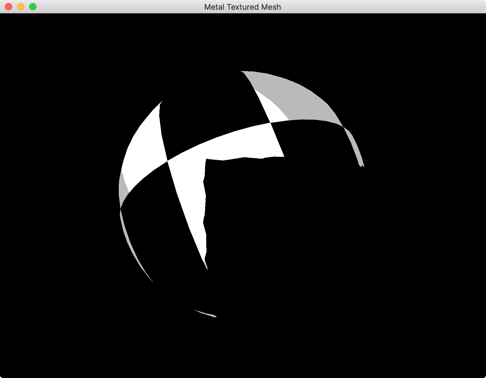

Samuel Evans-Powell
Implementing Deferred Shading in Metal
Introduction
Deferred shading is a rendering technique usually used to optimize scenes with a large number of light sources. Rather than perform expensive lighting calcuations on every fragment in the scene, we 'defer' the lighting calculations to a later time, when we know which fragments are affected by which lights.
Process
The process of my particular implementation of deferred shading is as follows:
We first render the scene in what is known as the 'Geometry Buffer' or 'GBuffer' pass, where we gather information about a scene (such as albedo, normal, depth and position information) and render it to separate textures.
The position, normal, world position and depth of a simple scene are shown below. Note that the normal and position textures look the same because the sphere is positioned at (0, 0, 0) and hence the position of each fragment is equivalent to that fragment's normal.

Next, we render the light volumes in the scene. The light volumes are pieces of geometry chosen to mimic the area-of-effect of a particular light. For example, a point light can be represented by a sphere mesh. The radius of the sphere mesh should be such that the light contribution provided by that light at the edge of the mesh be 0.
A visualization of the lights in the example scene:

When we render the light volumes, we use the GBuffer pass's unmodified depth texture as as the render pass's depth texture, this allows us to compare the depth of the light volumes with the scene depth. We also render both the front and back faces of the light volume. If a front-face fails the depth test, we increment the stencil buffer value at that point. If a back-face fails the depth test, we decrement the stencil buffer value at that point. This way, fragments within a light volume have a value of 1 in the stencil buffer and all other fragments have a value of 0 (A visual explanation of this stencil buffer algorithm can be found here).
Red represents pixels that are within the light volume:

Finally, we combine all the information we've gathered so far and perform the lighting calculations. The depth test has already determined that these fragments are the fragments that can be seen by the camera and the stencil pass has allowed us to determine which fragments are actually within (and so affected by) the lights. As a result, the number of expensive lighting calculations we have to perform is minimized, helping us to improve our render performance.
The final result looks something like this:

Implementation
The concept is actually quite simple, implementing it can be a little tricky, especially when using a framework you're not familiar with.
Disclaimer: There might be some bugs with this implementation that I haven't discovered yet.
Note that I've tried to code this explicitly as I can, I've avoided encapsulating some of these things into functions so that you can see what's going on more clearly. I also do a nominal amount of error-checking.
To follow along with the rest of this tutorial, do the following:
- Download the sample code (I started with the sample code from Apple's Adopting Metal I sample).
- Open the project in Xcode.
- Click on the "Metal Textured Mesh" project in the Project Navigator.
- Choose a development team under "General > Signing".
- Run the project
You should see a rotating cube with a checkerboard texture on a white background. You might also find it easier to follow along with the finished program in hand: MetalDeferredLightingTutorial.
GBuffer pass
Albedo and depth
Let's setup our GBuffer pass. For now, we'll just render the scene albedo and depth.
We'll need a few resources to start us off:
Renderer.swift
@objc class Renderer : NSObject, MTKViewDelegate { // ... var time = TimeInterval(0.0) var constants = Constants() var gBufferAlbedoTexture: MTLTexture var gBufferDepthTexture: MTLTexture let gBufferDepthStencilState: MTLDepthStencilState var gBufferRenderPassDescriptor: MTLRenderPassDescriptor let gBufferRenderPipeline: MTLRenderPipelineState init?(mtkView: MTKView) { // ... // To be used for the size of the render textures let drawableWidth = Int(self.view.drawableSize.width) let drawableHeight = Int(self.view.drawableSize.height) // We create our shaders from here let library = device.newDefaultLibrary()! // Create GBuffer albedo texture // First we create a descriptor that describes the texture we're about to create let gBufferAlbedoTextureDescriptor: MTLTextureDescriptor = MTLTextureDescriptor.texture2DDescriptor(pixelFormat: .rgba8Unorm, width: drawableWidth, height: drawableHeight, mipmapped: false) gBufferAlbedoTextureDescriptor.sampleCount = 1 gBufferAlbedoTextureDescriptor.storageMode = .private gBufferAlbedoTextureDescriptor.textureType = .type2D gBufferAlbedoTextureDescriptor.usage = [.renderTarget, .shaderRead] // Then we make the texture gBufferAlbedoTexture = device.makeTexture(descriptor: gBufferAlbedoTextureDescriptor) // Create GBuffer depth texture let gBufferDepthDesc: MTLTextureDescriptor = MTLTextureDescriptor.texture2DDescriptor(pixelFormat: .depth32Float, width: drawableWidth, height: drawableHeight, mipmapped: false) gBufferDepthDesc.sampleCount = 1 gBufferDepthDesc.storageMode = .private gBufferDepthDesc.textureType = .type2D gBufferDepthDesc.usage = [.renderTarget, .shaderRead] gBufferDepthTexture = device.makeTexture(descriptor: gBufferDepthDesc) // Build GBuffer depth/stencil state // Again we create a descriptor that describes the object we're about to create let gBufferDepthStencilStateDescriptor: MTLDepthStencilDescriptor = MTLDepthStencilDescriptor() gBufferDepthStencilStateDescriptor.isDepthWriteEnabled = true gBufferDepthStencilStateDescriptor.depthCompareFunction = .lessEqual gBufferDepthStencilStateDescriptor.frontFaceStencil = nil gBufferDepthStencilStateDescriptor.backFaceStencil = nil // Then we create the depth/stencil state gBufferDepthStencilState = device.makeDepthStencilState(descriptor: gBufferDepthStencilStateDescriptor) // Create GBuffer render pass descriptor gBufferRenderPassDescriptor = MTLRenderPassDescriptor() // Specify the properties of the first color attachment (our albedo texture) gBufferRenderPassDescriptor.colorAttachments[0].clearColor = MTLClearColorMake(0.0, 0.0, 0.0, 1.0) gBufferRenderPassDescriptor.colorAttachments[0].texture = gBufferAlbedoTexture gBufferRenderPassDescriptor.colorAttachments[0].loadAction = .clear gBufferRenderPassDescriptor.colorAttachments[0].storeAction = .store // Specify the properties of the depth attachment gBufferRenderPassDescriptor.depthAttachment.loadAction = .clear gBufferRenderPassDescriptor.depthAttachment.storeAction = .store gBufferRenderPassDescriptor.depthAttachment.texture = gBufferDepthTexture gBufferRenderPassDescriptor.depthAttachment.clearDepth = 1.0 // Create GBuffer render pipeline let gBufferRenderPipelineDesc = MTLRenderPipelineDescriptor() gBufferRenderPipelineDesc.colorAttachments[0].pixelFormat = .rgba8Unorm gBufferRenderPipelineDesc.depthAttachmentPixelFormat = .depth32Float_stencil8 gBufferRenderPipelineDesc.stencilAttachmentPixelFormat = .depth32Float_stencil8 gBufferRenderPipelineDesc.sampleCount = 1 gBufferRenderPipelineDesc.label = "GBuffer Render" gBufferRenderPipelineDesc.vertexFunction = library.makeFunction(name: "gBufferVert") gBufferRenderPipelineDesc.fragmentFunction = library.makeFunction(name: "gBufferFrag") do { try gBufferRenderPipeline = device.makeRenderPipelineState(descriptor: gBufferRenderPipelineDesc) } catch let error { fatalError("Failed to create GBuffer pipeline state, error \(error)") } super.init() // Now that all of our members are initialized, set ourselves as the drawing delegate of the view view.delegate = self view.device = device } // ... }
You'll also want to add the following lines to your "Shaders.metal" file:
Shaders.metal
struct GBufferOut { float4 albedo [[color(0)]]; }; vertex VertexOut gBufferVert(const device VertexIn *vertices [[buffer(0)]], const device Constants &uniforms [[buffer(1)]], unsigned int vid [[vertex_id]]) { VertexOut out; VertexIn vin = vertices[vid]; float4 inPosition = float4(vin.position, 1.0); out.position = uniforms.modelViewProjectionMatrix * inPosition; float3 normal = vin.normal; float3 eyeNormal = normalize(uniforms.normalMatrix * normal); out.normal = eyeNormal; out.texCoords = vin.texCoords; return out; } fragment GBufferOut gBufferFrag(VertexOut in [[stage_in]], texture2d<float> albedo_texture [[texture(0)]]) { // Sample from checkerboard texture constexpr sampler linear_sampler(min_filter::linear, mag_filter::linear); float4 albedo = albedo_texture.sample(linear_sampler, in.texCoords); GBufferOut output; // Output to our GBuffer albedo texture output.albedo = albedo; return output; }
To actually do anything with all this, we'll need to almost completely replace our render function:
Renderer.swift
func render(_ view: MTKView) { // Our animation will be dependent on the frame time, so that regardless of how // fast we're animating, the speed of the transformations will be roughly constant. let timestep = 1.0 / TimeInterval(view.preferredFramesPerSecond) updateWithTimestep(timestep) // A command buffer is a container for the work we want to perform with the GPU. let commandBuffer = commandQueue.makeCommandBuffer() // ---- GBUFFER ---- // // Draw our scene to texture // We use an encoder to 'encode' commands into a command buffer let gBufferEncoder = commandBuffer.makeRenderCommandEncoder(descriptor: gBufferRenderPassDescriptor) gBufferEncoder.pushDebugGroup("GBuffer") // For debugging gBufferEncoder.label = "GBuffer" // Use the depth stencil state we created earlier gBufferEncoder.setDepthStencilState(gBufferDepthStencilState) gBufferEncoder.setCullMode(.back) // Set winding order gBufferEncoder.setFrontFacing(.counterClockwise) // Use the render pipeline state we created earlier gBufferEncoder.setRenderPipelineState(gBufferRenderPipeline) // Upload vertex data gBufferEncoder.setVertexBuffer(mesh.vertexBuffer, offset:0, at:0) // Upload uniforms gBufferEncoder.setVertexBytes(&constants, length: MemoryLayout<Constants>.size, at: 1) // Bind the checkerboard texture (for the cube) gBufferEncoder.setFragmentTexture(texture, at: 0) // Draw our mesh gBufferEncoder.drawIndexedPrimitives(type: mesh.primitiveType, indexCount: mesh.indexCount, indexType: mesh.indexType, indexBuffer: mesh.indexBuffer, indexBufferOffset: 0) gBufferEncoder.popDebugGroup() // For debugging // Finish encoding commands in this encoder gBufferEncoder.endEncoding() // ---- BLIT ---- // // A 'drawable' is essentially a render target that can be displayed on the screen let currDrawable = view.currentDrawable // Blit our texture to the screen let blitEncoder = commandBuffer.makeBlitCommandEncoder() blitEncoder.pushDebugGroup("Blit") // Create a region that covers the entire texture we want to blit to the screen let origin: MTLOrigin = MTLOriginMake(0, 0, 0) let size: MTLSize = MTLSizeMake(Int(self.view.drawableSize.width), Int(self.view.drawableSize.height), 1) // Encode copy command, copying from our albedo texture to the 'current drawable' texture blitEncoder.copy(from: gBufferAlbedoTexture, sourceSlice: 0, sourceLevel: 0, sourceOrigin: origin, sourceSize: size, to: (currDrawable?.texture)!, destinationSlice: 0, destinationLevel: 0, destinationOrigin: origin) blitEncoder.endEncoding() blitEncoder.popDebugGroup() if let drawable = currDrawable { // Display our drawable to the screen commandBuffer.present(drawable) } // Finish encoding commands commandBuffer.commit() }
You should see the following image on screen:

Great, that's step 1. Let's move on to rendering the normal and position data to a texture.
Normal and position
First, the normal data. Add a normal texture to the renderer:
Renderer.swift
// ... var time = TimeInterval(0.0) var constants = Constants() var gBufferAlbedoTexture: MTLTexture var gBufferDepthTexture: MTLTexture let gBufferDepthStencilState: MTLDepthStencilState var gBufferRenderPassDescriptor: MTLRenderPassDescriptor let gBufferRenderPipeline: MTLRenderPipelineState var gBufferNormalTexture: MTLTexture init?(mtkView: MTKView) { // ... // Create GBuffer albedo texture // First we create a descriptor that describes the texture we're about to create let gBufferAlbedoTextureDescriptor: MTLTextureDescriptor = MTLTextureDescriptor.texture2DDescriptor(pixelFormat: .rgba8Unorm, width: drawableWidth, height: drawableHeight, mipmapped: false) gBufferAlbedoTextureDescriptor.sampleCount = 1 gBufferAlbedoTextureDescriptor.storageMode = .private gBufferAlbedoTextureDescriptor.textureType = .type2D gBufferAlbedoTextureDescriptor.usage = [.renderTarget, .shaderRead] // Then we make the texture gBufferAlbedoTexture = device.makeTexture(descriptor: gBufferAlbedoTextureDescriptor) // Create GBuffer normal texture let gBufferNormalTextureDescriptor: MTLTextureDescriptor = MTLTextureDescriptor.texture2DDescriptor(pixelFormat: .rgba16Float, width: drawableWidth, height: drawableHeight, mipmapped: false) gBufferNormalTextureDescriptor.sampleCount = 1 gBufferNormalTextureDescriptor.storageMode = .private gBufferNormalTextureDescriptor.textureType = .type2D gBufferNormalTextureDescriptor.usage = [.renderTarget, .shaderRead] gBufferNormalTexture = device.makeTexture(descriptor: gBufferNormalTextureDescriptor) // ... // Create GBuffer render pass descriptor gBufferRenderPassDescriptor = MTLRenderPassDescriptor() // Specify the properties of the first color attachment (our albedo texture) gBufferRenderPassDescriptor.colorAttachments[0].clearColor = MTLClearColorMake(0.0, 0.0, 0.0, 1.0) gBufferRenderPassDescriptor.colorAttachments[0].texture = gBufferAlbedoTexture gBufferRenderPassDescriptor.colorAttachments[0].loadAction = .clear gBufferRenderPassDescriptor.colorAttachments[0].storeAction = .store // Specify the properties of the second color attachment (our normal texture) gBufferRenderPassDescriptor.colorAttachments[1].clearColor = MTLClearColorMake(0, 0, 0, 1) gBufferRenderPassDescriptor.colorAttachments[1].texture = gBufferNormalTexture gBufferRenderPassDescriptor.colorAttachments[1].loadAction = .clear gBufferRenderPassDescriptor.colorAttachments[1].storeAction = .store // ... // Create GBuffer render pipeline let gBufferRenderPipelineDesc = MTLRenderPipelineDescriptor() gBufferRenderPipelineDesc.colorAttachments[0].pixelFormat = .rgba8Unorm // Add the following line to describe the pixel format of the normal texture gBufferRenderPipelineDesc.colorAttachments[1].pixelFormat = .rgba16Float gBufferRenderPipelineDesc.depthAttachmentPixelFormat = .depth32Float_stencil8 gBufferRenderPipelineDesc.stencilAttachmentPixelFormat = .depth32Float_stencil8 gBufferRenderPipelineDesc.sampleCount = 1 gBufferRenderPipelineDesc.label = "GBuffer Render" gBufferRenderPipelineDesc.vertexFunction = library.makeFunction(name: "gBufferVert") gBufferRenderPipelineDesc.fragmentFunction = library.makeFunction(name: "gBufferFrag") do { try gBufferRenderPipeline = device.makeRenderPipelineState(descriptor: gBufferRenderPipelineDesc) } catch let error { fatalError("Failed to create GBuffer pipeline state, error \(error)") } // ... }
Shaders.metal
// ... struct GBufferOut { float4 albedo [[color(0)]]; float4 normal [[color(1)]]; // Add normal texture output }; // ... fragment GBufferOut gBufferFrag(VertexOut in [[stage_in]], texture2d<float> albedo_texture [[texture(0)]]) { constexpr sampler linear_sampler(min_filter::linear, mag_filter::linear); float4 albedo = albedo_texture.sample(linear_sampler, in.texCoords); GBufferOut output; output.albedo = albedo; output.normal = float4(in.normal, 1.0); // Add the following line to the fragment function return output; }
Now, change the blit copy command to copy from the normal texture, rather than the albedo texture. This will display the normal texture to the screen:
Renderer.swift
func render(_ view: MTKView) { // ... blitEncoder.copy(from: gBufferNormalTexture, sourceSlice: 0, sourceLevel: 0, sourceOrigin: origin, sourceSize: size, to: (currDrawable?.texture)!, destinationSlice: 0, destinationLevel: 0, destinationOrigin: origin) // ... }
You might notice some artifacts, this has to do with the fact that we're blitting a 16-bit float directly to an 8-bit drawable texture. You can replace ".rgba16Float" to ".rgba8Unorm" in your code to confirm this.
Renderer.swift
// ... let gBufferNormalTextureDescriptor: MTLTextureDescriptor = MTLTextureDescriptor.texture2DDescriptor(pixelFormat: .rgba8Unorm, width: drawableWidth, height: drawableHeight, mipmapped: false) // ... gBufferRenderPipelineDesc.colorAttachments[1].pixelFormat = .rgba8Unorm // ...
To finish up the GBuffer pass, let's render the world position of our scene to texture.
Renderer.swift
@objc class Renderer : NSObject, MTKViewDelegate { // ... var gBufferAlbedoTexture: MTLTexture var gBufferNormalTexture: MTLTexture // Add position texture var gBufferPositionTexture: MTLTexture var gBufferDepthTexture: MTLTexture let gBufferDepthStencilState: MTLDepthStencilState var gBufferRenderPassDescriptor: MTLRenderPassDescriptor let gBufferRenderPipeline: MTLRenderPipelineState init?(mtkView: MTKView) { // ... // Create GBuffer normal texture let gBufferNormalTextureDescriptor: MTLTextureDescriptor = MTLTextureDescriptor.texture2DDescriptor(pixelFormat: .rgba16Float, width: drawableWidth, height: drawableHeight, mipmapped: false) gBufferNormalTextureDescriptor.sampleCount = 1 gBufferNormalTextureDescriptor.storageMode = .private gBufferNormalTextureDescriptor.textureType = .type2D gBufferNormalTextureDescriptor.usage = [.renderTarget, .shaderRead] gBufferNormalTexture = device.makeTexture(descriptor: gBufferNormalTextureDescriptor) // Create GBuffer position texture let gBufferPositionTextureDescriptor: MTLTextureDescriptor = MTLTextureDescriptor.texture2DDescriptor(pixelFormat: .rgba16Float, width: drawableWidth, height: drawableHeight, mipmapped: false) gBufferPositionTextureDescriptor.sampleCount = 1 gBufferPositionTextureDescriptor.storageMode = .private gBufferPositionTextureDescriptor.textureType = .type2D gBufferPositionTextureDescriptor.usage = [.renderTarget, .shaderRead] gBufferPositionTexture = device.makeTexture(descriptor: gBufferPositionTextureDescriptor) // ... // Create GBuffer render pass descriptor gBufferRenderPassDescriptor = MTLRenderPassDescriptor() // Specify the properties of the first color attachment (our albedo texture) gBufferRenderPassDescriptor.colorAttachments[0].clearColor = MTLClearColorMake(0.0, 0.0, 0.0, 1.0) gBufferRenderPassDescriptor.colorAttachments[0].texture = gBufferAlbedoTexture gBufferRenderPassDescriptor.colorAttachments[0].loadAction = .clear gBufferRenderPassDescriptor.colorAttachments[0].storeAction = .store // Specify the properties of the second color attachment (our normal texture) gBufferRenderPassDescriptor.colorAttachments[1].clearColor = MTLClearColorMake(0, 0, 0, 1) gBufferRenderPassDescriptor.colorAttachments[1].texture = gBufferNormalTexture gBufferRenderPassDescriptor.colorAttachments[1].loadAction = .clear gBufferRenderPassDescriptor.colorAttachments[1].storeAction = .store // Specify the properties of the third color attachment (our position texture) gBufferRenderPassDescriptor.colorAttachments[2].clearColor = MTLClearColorMake(0, 0, 0, 1) gBufferRenderPassDescriptor.colorAttachments[2].texture = gBufferPositionTexture gBufferRenderPassDescriptor.colorAttachments[2].loadAction = .clear gBufferRenderPassDescriptor.colorAttachments[2].storeAction = .store // ... // Create GBuffer render pipeline let gBufferRenderPipelineDesc = MTLRenderPipelineDescriptor() gBufferRenderPipelineDesc.colorAttachments[0].pixelFormat = .rgba8Unorm gBufferRenderPipelineDesc.colorAttachments[1].pixelFormat = .rgba16Float // Add this line to describe the pixel format of the position texture gBufferRenderPipelineDesc.colorAttachments[2].pixelFormat = .rgba16Float // ... } // ... }
Again, we'll have to make a few adjustments to our shader. Things get a little bit more complicated.
Shaders.metal
// ... #include <metal_stdlib> using namespace metal; struct Constants { float4x4 modelViewProjectionMatrix; float3x3 normalMatrix; // Add space for a model matrix in our constants structs float4x4 modelMatrix; }; // ... struct VertexOut { float4 position [[position]]; float3 normal; float2 texCoords; // Add world position to our vertex shader out struct float4 worldPosition; }; struct GBufferOut { float4 albedo [[color(0)]]; float4 normal [[color(1)]]; // Add another texture output to our GBuffer struct float4 position [[color(2)]]; }; vertex VertexOut gBufferVert(const device VertexIn *vertices [[buffer(0)]], const device Constants &uniforms [[buffer(1)]], unsigned int vid [[vertex_id]]) { VertexOut out; VertexIn vin = vertices[vid]; float4 inPosition = float4(vin.position, 1.0); out.position = uniforms.modelViewProjectionMatrix * inPosition; float3 normal = vin.normal; float3 eyeNormal = normalize(uniforms.normalMatrix * normal); out.normal = eyeNormal; out.texCoords = vin.texCoords; // Calculate the world position of this vertex out.worldPosition = uniforms.modelMatrix * inPosition; return out; } fragment GBufferOut gBufferFrag(VertexOut in [[stage_in]], texture2d<float> albedo_texture [[texture(0)]]) { constexpr sampler linear_sampler(min_filter::linear, mag_filter::linear); float4 albedo = albedo_texture.sample(linear_sampler, in.texCoords); GBufferOut output; output.albedo = albedo; output.normal = float4(in.normal, 1.0); // Output this fragment's world position output.position = in.worldPosition; return output; }
Because we changed the Constants struct in the shader, we'll have to change it in 'Renderer.swift' too:
Renderer.swift
// ... import Metal import simd import MetalKit struct Constants { var modelViewProjectionMatrix = matrix_identity_float4x4 var normalMatrix = matrix_identity_float3x3 // Add model matrix to Constants struct var modelMatrix = matrix_identity_float4x4 } // ...
We also need to make sure that we update the model matrix for the cube.
Renderer.swift
func updateWithTimestep(_ timestep: TimeInterval) { // We keep track of time so we can animate the various transformations time = time + timestep let modelToWorldMatrix = matrix4x4_rotation(Float(time) * 0.5, vector_float3(0.7, 1, 0)) // So that the figure doesn't get distorted when the window changes size or rotates, // we factor the current aspect ration into our projection matrix. We also select // sensible values for the vertical view angle and the distances to the near and far planes. let viewSize = self.view.bounds.size let aspectRatio = Float(viewSize.width / viewSize.height) let verticalViewAngle = radians_from_degrees(65) let nearZ: Float = 0.1 let farZ: Float = 100.0 let projectionMatrix = matrix_perspective(verticalViewAngle, aspectRatio, nearZ, farZ) let viewMatrix = matrix_look_at(0, 0, 2.5, 0, 0, 0, 0, 1, 0) // The combined model-view-projection matrix moves our vertices from model space into clip space let mvMatrix = matrix_multiply(viewMatrix, modelToWorldMatrix); constants.modelViewProjectionMatrix = matrix_multiply(projectionMatrix, mvMatrix) constants.normalMatrix = matrix_inverse_transpose(matrix_upper_left_3x3(mvMatrix)) // Make sure to update model matrix constants.modelMatrix = modelToWorldMatrix }
Finally, we can change our blit copy command to copy from the position texture and view the results. Again, you will notice some artifacts and again you can temporarily change the format of the texture to "rgba8Unorm" to avoid these artifacts.
Renderer.swift
func render(_ view: MTKView) { // ... blitEncoder.copy(from: gBufferPositionTexture, sourceSlice: 0, sourceLevel: 0, sourceOrigin: origin, sourceSize: size, to: (currDrawable?.texture)!, destinationSlice: 0, destinationLevel: 0, destinationOrigin: origin) // ... }
Great! We've finished rendering the GBuffer data from our scene. Now onto the stencil pass.
Stencil pass
Prepare the light volumes
Before we can render any lights, we need to prepare the meshes that will represent the light volumes. For now we're only going to represent point lights using spheres. It's possible to represent other light types using different volumes (e.g. represent directional lights using a quad that covers the entire screen).
The easiest way to do this is to modify the Mesh class that is included in the example:
Mesh.swift
// ... class Mesh { var vertexBuffer: MTLBuffer var vertexDescriptor: MTLVertexDescriptor var primitiveType: MTLPrimitiveType var indexBuffer: MTLBuffer var indexCount: Int var indexType: MTLIndexType init?(cubeWithSize size: Float, device: MTLDevice) { // ... } // Add a new init method for spheres init?(sphereWithSize size: Float, device: MTLDevice) { let allocator = MTKMeshBufferAllocator(device: device) let mdlMesh = MDLMesh(sphereWithExtent: vector_float3(size, size, size), segments: vector_uint2(30, 30), inwardNormals: false, geometryType: .triangles, allocator: allocator) do { let mtkMesh = try MTKMesh(mesh: mdlMesh, device: device) let mtkVertexBuffer = mtkMesh.vertexBuffers[0] let submesh = mtkMesh.submeshes[0] let mtkIndexBuffer = submesh.indexBuffer vertexBuffer = mtkVertexBuffer.buffer vertexBuffer.label = "Mesh Vertices" vertexDescriptor = MTKMetalVertexDescriptorFromModelIO(mdlMesh.vertexDescriptor) primitiveType = submesh.primitiveType indexBuffer = mtkIndexBuffer.buffer indexBuffer.label = "Mesh Indices" indexCount = submesh.indexCount indexType = submesh.indexType } catch _ { return nil // Unable to create MTK mesh from MDL mesh } } }
Now we can create a light volume mesh in our renderer:
Renderer.swift
// ... let gBufferRenderPipeline: MTLRenderPipelineState let lightSphere: Mesh init?(mtkView: MTKView) { // ... // Make a unit sphere, we'll scale each light volume by it's radius in the vertex shader lightSphere = Mesh(sphereWithSize: 1.0, device: device)! super.init() // Now that all of our members are initialized, set ourselves as the drawing delegate of the view view.delegate = self view.device = device }
And add a number of properties for our lights:
Renderer.swift
// ... struct Constants { var modelViewProjectionMatrix = matrix_identity_float4x4 var normalMatrix = matrix_identity_float3x3 var modelMatrix = matrix_identity_float4x4 } struct PointLight { var worldPosition = float3(0.0, 0.0, 0.0) var radius = Float(1.0) } @objc class Renderer : NSObject, MTKViewDelegate { // ... let lightSphere: Mesh let lightNumber = 2 var lightConstants = [Constants]() var lightProperties = [PointLight]() } init?(mtkView: MTKView) { // ... lightSphere = Mesh(sphereWithSize: 1.0, device: device)! // Add space for each light's data for _ in 0...(lightNumber - 1) { lightProperties.append(PointLight()) lightConstants.append(Constants()) } // Hard-code position and radius lightProperties[0].worldPosition = float3(0.0, 0.4, 0.0) lightProperties[0].radius = 0.7 lightProperties[1].worldPosition = float3(-0.4, 0.0, 0.0) lightProperties[1].radius = 0.6 super.init() // Now that all of our members are initialized, set ourselves as the drawing delegate of the view view.delegate = self view.device = device }
Before we do anything further, let's render these lights in the GBuffer pass so that we can ensure they're working as we'd expect.
Renderer.swift
// ... func updateWithTimestep(_ timestep: TimeInterval) { // ... // Update light constants for i in 0...(lightNumber-1) { let lightModelToWorldMatrix = matrix_multiply(matrix4x4_translation(lightProperties[i].worldPosition.x, lightProperties[i].worldPosition.y, lightProperties[i].worldPosition.z), matrix4x4_scale(vector3(lightProperties[i].radius, lightProperties[i].radius, lightProperties[i].radius))) let lightMvMatrix = matrix_multiply(viewMatrix, lightModelToWorldMatrix); lightConstants[i].modelViewProjectionMatrix = matrix_multiply(projectionMatrix, lightMvMatrix) lightConstants[i].normalMatrix = matrix_inverse_transpose(matrix_upper_left_3x3(lightMvMatrix)) lightConstants[i].modelMatrix = lightModelToWorldMatrix; } } func render(_ view: MTKView) { // ... // ---- GBUFFER ---- // // Draw our scene to texture // We use an encoder to 'encode' commands into a command buffer let gBufferEncoder = commandBuffer.makeRenderCommandEncoder(descriptor: gBufferRenderPassDescriptor) gBufferEncoder.pushDebugGroup("GBuffer") // For debugging gBufferEncoder.label = "GBuffer" // Use the depth stencil state we created earlier gBufferEncoder.setDepthStencilState(gBufferDepthStencilState) gBufferEncoder.setCullMode(.back) // Set winding order gBufferEncoder.setFrontFacing(.counterClockwise) // Use the render pipeline state we created earlier gBufferEncoder.setRenderPipelineState(gBufferRenderPipeline) // Upload vertex data gBufferEncoder.setVertexBuffer(mesh.vertexBuffer, offset:0, at:0) // Upload uniforms gBufferEncoder.setVertexBytes(&constants, length: MemoryLayout<Constants>.size, at: 1) // Bind the checkerboard texture (for the cube) gBufferEncoder.setFragmentTexture(texture, at: 0) // Draw our mesh gBufferEncoder.drawIndexedPrimitives(type: mesh.primitiveType, indexCount: mesh.indexCount, indexType: mesh.indexType, indexBuffer: mesh.indexBuffer, indexBufferOffset: 0) // Draw our light meshes // Upload light vertex data gBufferEncoder.setVertexBuffer(lightSphere.vertexBuffer, offset:0, at:0) for i in 0...(lightNumber - 1) { // Upload uniforms gBufferEncoder.setVertexBytes(&lightConstants[i], length: MemoryLayout<Constants>.size, at: 1) gBufferEncoder.drawIndexedPrimitives(type: lightSphere.primitiveType, indexCount: lightSphere.indexCount, indexType: lightSphere.indexType, indexBuffer: lightSphere.indexBuffer, indexBufferOffset: 0) } gBufferEncoder.popDebugGroup() // For debugging // Finish encoding commands in this encoder gBufferEncoder.endEncoding() // ... }

Looks alright to me! Note that I'm visualizing the normals in the above image.
When you're happy with the light volumes, remove them from the above drawing code.
Make the stencil pass
Let's start with the shaders:
Shaders.metal
struct StencilPassOut { float4 position [[position]]; }; vertex StencilPassOut stencilPassVert(const device VertexIn *vertices [[buffer(0)]], const device Constants &uniforms [[buffer(1)]], unsigned int vid [[vertex_id]]) { StencilPassOut out; out.position = uniforms.modelViewProjectionMatrix * float4(vertices[vid].position, 1.0); return out; } fragment void stencilPassNullFrag(StencilPassOut in [[stage_in]]) { }
Note that the fragment shader doesn't output anything, it has no need to. This pass will only populate the stencil buffer.
Instead of creating a new texture for our stencil buffer, let's piggyback on an existing one:
Renderer.swift
init?(mtkView: MTKView) { // ... // Create GBuffer depth (and stencil) texture let gBufferDepthDesc: MTLTextureDescriptor = MTLTextureDescriptor.texture2DDescriptor(pixelFormat: .depth32Float_stencil8, width: drawableWidth, height: drawableHeight, mipmapped: false) gBufferDepthDesc.sampleCount = 1 gBufferDepthDesc.storageMode = .private gBufferDepthDesc.textureType = .type2D gBufferDepthDesc.usage = [.renderTarget, .shaderRead] gBufferDepthTexture = device.makeTexture(descriptor: gBufferDepthDesc) // ... }
Ok, next we'll need to configure the behaviour of the stencil pass:
Renderer.swift
// ... let stencilPassDepthStencilState: MTLDepthStencilState let stencilRenderPassDescriptor: MTLRenderPassDescriptor let stencilRenderPipeline: MTLRenderPipelineState init?(mtkView: MTKView) { // ... /* Be very careful with these operations, I clear the stencil buffer to a value of 0, so it's * very important that I set the depthFailureOperation to 'decrementWRAP' and 'incrementWRAP' * for the front and back face stencil operations (respectively) rather than 'decrementClamp' * and 'incrementClamp'. This is because we don't know in which order these operations will * occur. Let's say we use clamping: * * - Back then front order - two failures, expected stencil buffer value: 0 * - Stencil buffer starts at 0 * - Back face depth test fails first: stencil buffer incremented to 1 * - Front face depth test fails second: stencil buffer decremented to 0 * - Stencil buffer final value = 0 (== expected value) - all good! * * - Front then back order - two failures, expected stencil buffer value: 0 * - Stencil buffer starts at 0 * - Front face depth test fails first: stencil buffer decremented and clamped to 0 * - Back face depth test fails second: stencil buffer incremented to 1 * - Stencil buffer final value = 1 (!= expected value) - problem here! * * Wrapping does not have this issue. There are of course other ways to avoid this problem. */ // Decrement when front faces depth fail let frontFaceStencilOp: MTLStencilDescriptor = MTLStencilDescriptor() frontFaceStencilOp.stencilCompareFunction = .always // Stencil test always succeeds, only concerned about depth test frontFaceStencilOp.stencilFailureOperation = .keep // Stencil test always succeeds frontFaceStencilOp.depthStencilPassOperation = .keep // Do nothing if depth test passes frontFaceStencilOp.depthFailureOperation = .decrementWrap // Decrement if depth test fails // Increment when back faces depth fail let backFaceStencilOp: MTLStencilDescriptor = MTLStencilDescriptor() backFaceStencilOp.stencilCompareFunction = .always // Stencil test always succeeds, only concerned about depth test backFaceStencilOp.stencilFailureOperation = .keep // Stencil test always succeeds backFaceStencilOp.depthStencilPassOperation = .keep // Do nothing if depth test passes backFaceStencilOp.depthFailureOperation = .incrementWrap // Increment if depth test fails let stencilPassDepthStencilStateDesc: MTLDepthStencilDescriptor = MTLDepthStencilDescriptor() stencilPassDepthStencilStateDesc.isDepthWriteEnabled = false // Only concerned with modifying stencil buffer stencilPassDepthStencilStateDesc.depthCompareFunction = .lessEqual // Only perform stencil op when depth function fails stencilPassDepthStencilStateDesc.frontFaceStencil = frontFaceStencilOp // For front-facing polygons stencilPassDepthStencilStateDesc.backFaceStencil = backFaceStencilOp // For back-facing polygons stencilPassDepthStencilState = device.makeDepthStencilState(descriptor: stencilPassDepthStencilStateDesc) let stencilRenderPipelineDesc = MTLRenderPipelineDescriptor() stencilRenderPipelineDesc.label = "Stencil Pipeline" stencilRenderPipelineDesc.sampleCount = view.sampleCount stencilRenderPipelineDesc.vertexFunction = library.makeFunction(name: "stencilPassVert") stencilRenderPipelineDesc.fragmentFunction = library.makeFunction(name: "stencilPassNullFrag") stencilRenderPipelineDesc.depthAttachmentPixelFormat = .depth32Float_stencil8 stencilRenderPipelineDesc.stencilAttachmentPixelFormat = .depth32Float_stencil8 do { try stencilRenderPipeline = device.makeRenderPipelineState(descriptor: stencilRenderPipelineDesc) } catch let error { fatalError("Failed to create Stencil pipeline state, error \(error)") } stencilRenderPassDescriptor = MTLRenderPassDescriptor() stencilRenderPassDescriptor.depthAttachment.loadAction = .load // Load up depth information from GBuffer pass stencilRenderPassDescriptor.depthAttachment.storeAction = .store // We'll use depth information in later passes stencilRenderPassDescriptor.depthAttachment.texture = gBufferDepthTexture stencilRenderPassDescriptor.stencilAttachment.loadAction = .clear // Contents of stencil buffer unkown at this point, clear it stencilRenderPassDescriptor.stencilAttachment.storeAction = .store // Store the stencil buffer so that the next pass can use it stencilRenderPassDescriptor.stencilAttachment.texture = gBufferDepthTexture super.init() // Now that all of our members are initialized, set ourselves as the drawing delegate of the view view.delegate = self view.device = device }
Finally, we do the stencil pass:
Renderer.swift
func render(_ view: MTKView) { // ... // ---- GBUFFER ---- // // Draw our scene to texture // We use an encoder to 'encode' commands into a command buffer let gBufferEncoder = commandBuffer.makeRenderCommandEncoder(descriptor: gBufferRenderPassDescriptor) gBufferEncoder.pushDebugGroup("GBuffer") // For debugging gBufferEncoder.label = "GBuffer" // Use the depth stencil state we created earlier gBufferEncoder.setDepthStencilState(gBufferDepthStencilState) gBufferEncoder.setCullMode(.back) // Set winding order gBufferEncoder.setFrontFacing(.counterClockwise) // Use the render pipeline state we created earlier gBufferEncoder.setRenderPipelineState(gBufferRenderPipeline) // Upload vertex data gBufferEncoder.setVertexBuffer(mesh.vertexBuffer, offset:0, at:0) // Upload uniforms gBufferEncoder.setVertexBytes(&constants, length: MemoryLayout<Constants>.size, at: 1) // Bind the checkerboard texture (for the cube) gBufferEncoder.setFragmentTexture(texture, at: 0) // Draw our mesh gBufferEncoder.drawIndexedPrimitives(type: mesh.primitiveType, indexCount: mesh.indexCount, indexType: mesh.indexType, indexBuffer: mesh.indexBuffer, indexBufferOffset: 0) gBufferEncoder.popDebugGroup() // For debugging // Finish encoding commands in this encoder gBufferEncoder.endEncoding() // ---- STENCIL ---- // let stencilPassEncoder = commandBuffer.makeRenderCommandEncoder(descriptor: stencilRenderPassDescriptor) stencilPassEncoder.pushDebugGroup("Stencil Pass") stencilPassEncoder.label = "Stencil Pass" stencilPassEncoder.setDepthStencilState(stencilPassDepthStencilState) // We want to draw back-facing AND front-facing polygons stencilPassEncoder.setCullMode(.none) stencilPassEncoder.setFrontFacing(.counterClockwise) stencilPassEncoder.setRenderPipelineState(stencilRenderPipeline) stencilPassEncoder.setVertexBuffer(lightSphere.vertexBuffer, offset:0, at:0) for i in 0...(lightNumber-1) { stencilPassEncoder.setVertexBytes(&lightConstants[i], length: MemoryLayout<Constants>.size, at: 1) stencilPassEncoder.drawIndexedPrimitives(type: lightSphere.primitiveType, indexCount: lightSphere.indexCount, indexType: lightSphere.indexType, indexBuffer: lightSphere.indexBuffer, indexBufferOffset: 0) } stencilPassEncoder.popDebugGroup() stencilPassEncoder.endEncoding() // ---- BLIT ---- // // Blit our texture to the screen let blitEncoder = commandBuffer.makeBlitCommandEncoder() blitEncoder.pushDebugGroup("Blit") // ... }
Of course we won't see anything yet, we'll have to trust that the stencil buffer is filled for now.
Lighting pass
A first pass
Let's start off with some simplified shaders for our lighting pass:
Shaders.metal
// ... vertex StencilPassOut stencilPassVert(const device VertexIn *vertices [[buffer(0)]], const device Constants &uniforms [[buffer(1)]], unsigned int vid [[vertex_id]]) { StencilPassOut out; out.position = uniforms.modelViewProjectionMatrix * float4(vertices[vid].position, 1.0); return out; } fragment void stencilPassNullFrag(StencilPassOut in [[stage_in]]) { } // Used to calculate texture sampling co-ordinates struct LightFragmentInput { float2 screenSize; }; fragment float4 lightVolumeFrag(StencilPassOut in [[stage_in]], constant LightFragmentInput *lightData [[ buffer(0) ]], texture2d<float> albedoTexture [[ texture(0) ]], texture2d<float> normalsTexture [[ texture(1) ]], texture2d<float> positionTexture [[ texture(2) ]]) { // We sample albedo, normals and position from the position of this fragment, normalized to be 0-1 within screen space float2 sampleCoords = in.position.xy / lightData->screenSize; constexpr sampler texSampler; // Multiply by 0.5 so we can see the lights blending float3 albedo = float3(0.5) * float3(albedoTexture.sample(texSampler, sampleCoords)); // Gamma correct the texture float3 gammaCorrect = pow(albedo, (1.0/2.2)); return float4(gammaCorrect, 1.0); }
We can actually re-use the vertex shader from our stencil pass. In the fragment shader, we use the screen size to normalize the fragment position. The result of this calculation we use as the texture co-ordinates for our sampling of the various input textures from the GBuffer pass.
Renderer.swift
// Add light fragment input struct struct LightFragmentInput { var screenSize = float2(1, 1) } @objc class Renderer : NSObject, MTKViewDelegate { let lightSphere: Mesh let lightNumber = 2 var lightConstants = [Constants]() var lightProperties = [PointLight]() // Add light fragment input property var lightFragmentInput = LightFragmentInput() let stencilPassDepthStencilState: MTLDepthStencilState let stencilRenderPassDescriptor: MTLRenderPassDescriptor let stencilRenderPipeline: MTLRenderPipelineState init?(mtkView: MTKView) { // ... lightFragmentInput.screenSize.x = Float(view.drawableSize.width) lightFragmentInput.screenSize.y = Float(view.drawableSize.height) super.init() // Now that all of our members are initialized, set ourselves as the drawing delegate of the view view.delegate = self view.device = device }
Now we can prepare the lighting pass:
Renderer.swift
// ... let lightVolumeDepthStencilState: MTLDepthStencilState var lightVolumeRenderPassDescriptor: MTLRenderPassDescriptor = MTLRenderPassDescriptor() let lightVolumeRenderPipeline: MTLRenderPipelineState // The final texture we'll blit to the screen var compositeTexture: MTLTexture init?(mtkView: MTKView) { // ... lightFragmentInput.screenSize.x = Float(view.drawableSize.width) lightFragmentInput.screenSize.y = Float(view.drawableSize.height) // Create composite texture let compositeTextureDescriptor: MTLTextureDescriptor = MTLTextureDescriptor.texture2DDescriptor(pixelFormat: .bgra8Unorm, width: drawableWidth, height: drawableHeight, mipmapped: false) compositeTextureDescriptor.sampleCount = 1 compositeTextureDescriptor.storageMode = .private compositeTextureDescriptor.textureType = .type2D compositeTextureDescriptor.usage = [.renderTarget] compositeTexture = device.makeTexture(descriptor: compositeTextureDescriptor) // Build light volume depth-stencil state let lightVolumeStencilOp: MTLStencilDescriptor = MTLStencilDescriptor() lightVolumeStencilOp.stencilCompareFunction = .notEqual // Only pass if not equal to reference value (ref. value is 0 by default) lightVolumeStencilOp.stencilFailureOperation = .keep // Don't modify stencil value at all lightVolumeStencilOp.depthStencilPassOperation = .keep lightVolumeStencilOp.depthFailureOperation = .keep // Depth test is set to always succeed let lightVolumeDepthStencilStateDesc: MTLDepthStencilDescriptor = MTLDepthStencilDescriptor() lightVolumeDepthStencilStateDesc.isDepthWriteEnabled = false // Don't modify depth buffer lightVolumeDepthStencilStateDesc.depthCompareFunction = .always // Stencil buffer will be used to determine if we should light this fragment, ignore depth value (always pass) lightVolumeDepthStencilStateDesc.backFaceStencil = lightVolumeStencilOp lightVolumeDepthStencilStateDesc.frontFaceStencil = lightVolumeStencilOp lightVolumeDepthStencilState = device.makeDepthStencilState(descriptor: lightVolumeDepthStencilStateDesc) // Build light volume render pass descriptor // Get current render pass descriptor instead lightVolumeRenderPassDescriptor = MTLRenderPassDescriptor() lightVolumeRenderPassDescriptor.colorAttachments[0].clearColor = MTLClearColorMake(0.0, 0.0, 0.0, 1) lightVolumeRenderPassDescriptor.colorAttachments[0].texture = compositeTexture lightVolumeRenderPassDescriptor.colorAttachments[0].loadAction = .clear lightVolumeRenderPassDescriptor.colorAttachments[0].storeAction = .store // Store for blitting lightVolumeRenderPassDescriptor.depthAttachment.clearDepth = 1.0 // Aren't using depth /* lightVolumeRenderPassDescriptor.depthAttachment.loadAction = .load lightVolumeRenderPassDescriptor.depthAttachment.storeAction = .store lightVolumeRenderPassDescriptor.depthAttachment.texture = gBufferDepthTexture */ lightVolumeRenderPassDescriptor.stencilAttachment.loadAction = .load lightVolumeRenderPassDescriptor.stencilAttachment.storeAction = .dontCare // Aren't using stencil buffer after this point lightVolumeRenderPassDescriptor.stencilAttachment.texture = gBufferDepthTexture // Build light volume render pipeline let lightVolumeRenderPipelineDesc = MTLRenderPipelineDescriptor() lightVolumeRenderPipelineDesc.colorAttachments[0].pixelFormat = .bgra8Unorm // We need to enable blending as each light volume is additive (it 'adds' to the contribution of the previous one) lightVolumeRenderPipelineDesc.colorAttachments[0].isBlendingEnabled = true lightVolumeRenderPipelineDesc.colorAttachments[0].rgbBlendOperation = .add lightVolumeRenderPipelineDesc.colorAttachments[0].sourceRGBBlendFactor = .one lightVolumeRenderPipelineDesc.colorAttachments[0].destinationRGBBlendFactor = .one lightVolumeRenderPipelineDesc.colorAttachments[0].alphaBlendOperation = .add lightVolumeRenderPipelineDesc.colorAttachments[0].sourceAlphaBlendFactor = .one lightVolumeRenderPipelineDesc.colorAttachments[0].destinationAlphaBlendFactor = .one lightVolumeRenderPipelineDesc.depthAttachmentPixelFormat = .depth32Float_stencil8 lightVolumeRenderPipelineDesc.stencilAttachmentPixelFormat = .depth32Float_stencil8 lightVolumeRenderPipelineDesc.sampleCount = 1 lightVolumeRenderPipelineDesc.label = "Light Volume Render" lightVolumeRenderPipelineDesc.vertexFunction = library.makeFunction(name: "stencilPassVert") lightVolumeRenderPipelineDesc.fragmentFunction = library.makeFunction(name: "lightVolumeFrag") do { try lightVolumeRenderPipeline = device.makeRenderPipelineState(descriptor: lightVolumeRenderPipelineDesc) } catch let error { fatalError("Failed to create lightVolume pipeline state, error \(error)") } super.init() // ... }
There's alot going on there, so read through it carefully.
Finally, let's perform the lighting pass:
Renderer.swift
func render(_ view: MTKView) { // ... stencilPassEncoder.popDebugGroup() stencilPassEncoder.endEncoding() // ---- LIGHTING ---- // let lightEncoder = commandBuffer.makeRenderCommandEncoder(descriptor: lightVolumeRenderPassDescriptor) lightEncoder.pushDebugGroup("Light Volume Pass") lightEncoder.label = "Light Volume Pass" lightEncoder.setDepthStencilState(lightVolumeDepthStencilState) lightEncoder.setStencilReferenceValue(0) lightEncoder.setCullMode(.front) lightEncoder.setFrontFacing(.counterClockwise) lightEncoder.setRenderPipelineState(lightVolumeRenderPipeline) lightEncoder.setFragmentTexture(gBufferAlbedoTexture, at: 0) lightEncoder.setFragmentTexture(gBufferNormalTexture, at: 1) lightEncoder.setFragmentTexture(gBufferPositionTexture, at: 2) lightEncoder.setVertexBuffer(lightSphere.vertexBuffer, offset:0, at:0) lightEncoder.setFragmentBytes(&lightFragmentInput, length: MemoryLayout<LightFragmentInput>.size, at: 0) for i in 0...(lightNumber - 1) { lightEncoder.setVertexBytes(&lightConstants[i], length: MemoryLayout<Constants>.size, at: 1) lightEncoder.drawIndexedPrimitives(type: lightSphere.primitiveType, indexCount: lightSphere.indexCount, indexType: lightSphere.indexType, indexBuffer: lightSphere.indexBuffer, indexBufferOffset: 0) } lightEncoder.popDebugGroup() lightEncoder.endEncoding() }
We also need to blit the final composite texture to the screen.
Renderer.swift
func render(_ view: MTKView) { // ... blitEncoder.copy(from: compositeTexture, sourceSlice: 0, sourceLevel: 0, sourceOrigin: origin, sourceSize: size, to: (currDrawable?.texture)!, destinationSlice: 0, destinationLevel: 0, destinationOrigin: origin) // ... }
You should see something like this:

You can see the lights blending nicely in the middle. Notice how the side of the cube facing away from the lights is still getting shaded? That might seem erroneous but that case will be handled in our shaders, which won't shade triangles facing away from the light source.
Obviously these are not the kind of shaders you'd normally use, they're only for visualization purposes.
Improving those shaders
We have all that information from the GBuffer available to us in our shaders, let's use it!
At this point I decided to change the cube mesh to a sphere so I could better see the effect of the lights. I also tweaked the light positions:
Renderer.swift
init?(mtkView: MTKView) { // ... // Compile the functions and other state into a pipeline object. do { renderPipelineState = try Renderer.buildRenderPipelineWithDevice(device, view: mtkView) } catch { print("Unable to compile render pipeline state") return nil } mesh = Mesh(cubeWithSize: 1.0, device: device)! // ... // Hard-code position and radius lightProperties[0].worldPosition = float3(1, 1, 1.5) lightProperties[0].radius = 1.0 lightProperties[1].worldPosition = float3(-0.4, 0.0, 0.0) lightProperties[1].radius = 1.0 }

Notice the wobbly edges of the light volume? It looks like that because of the low number of segments we're using in our sphere mesh. You can increase the number of segments in your 'Mesh.swift' file, but they won't be noticable when we do the lighting calculations (lighting contributions at the edge of the light volume should approach 0).
I am hard-coding the radii here. You can calculate the radius of the sphere based on fall-off, but I think this article is big enough for now. A good explanation of how to calculate the radius of a light volume is given in this OGLDev tutorial.
Shaders.metal
// ... struct LightFragmentInput { float2 screenSize; // We're going to need the camera's position to calculate specular lighting float3 camWorldPos; }; struct PointLight { float3 worldPosition; float radius; float3 color; }; fragment float4 lightVolumeFrag(StencilPassOut in [[stage_in]], constant LightFragmentInput *lightData [[ buffer(0) ]], constant PointLight *pointLight [[ buffer(1) ]], texture2d<float> albedoTexture [[ texture(0) ]], texture2d<float> normalsTexture [[ texture(1) ]], texture2d<float> positionTexture [[ texture(2) ]]) { // We sample albedo, normals and position from the position of this fragment, normalized to be 0-1 within screen space float2 sampleCoords = in.position.xy / lightData->screenSize; constexpr sampler texSampler; // Extract data for this fragment from GBuffer textures const float3 albedo = float3(albedoTexture.sample(texSampler, sampleCoords)); const float3 worldPosition = float3(positionTexture.sample(texSampler, sampleCoords)); const float3 normal = normalize(float3(normalsTexture.sample(texSampler, sampleCoords))); const float3 lightDir = normalize(pointLight->worldPosition - worldPosition); // Diffuse const float nDotL = max(dot(normal, lightDir), 0.0); const float3 diffuse = nDotL * albedo * pointLight->color; float3 result = diffuse; // Specular - if you want //const float3 viewDir = normalize(lightData->camWorldPos - worldPosition); //const float3 halfwayDir = normalize(lightDir + viewDir); //const float3 specular = pow(max(dot(normal, halfwayDir), 0.0), 60.0) * 0.2; //result = (diffuse + specular); const float3 gammaCorrect = pow(float3(result), (1.0/2.2)); return float4(gammaCorrect, 1.0); }
Renderer.swift
struct PointLight { var worldPosition = float3(0.0, 0.0, 0.0) var radius = Float(1.0) var color = float3(1, 1, 1) } struct LightFragmentInput { var screenSize = float2(1, 1) var camWorldPos = float3(0.0, 0.0, 2.5) } @objc class Renderer : NSObject, MTKViewDelegate { // ... init?(mtkView: MTKView) { // ... // Add space for each light's data for _ in 0...(lightNumber - 1) { lightProperties.append(PointLight()) lightConstants.append(Constants()) } // Hard-code position, radius, color lightProperties[0].worldPosition = float3(1, 1, 1.5) lightProperties[0].radius = 3 lightProperties[0].color = float3(1, 0, 0) lightProperties[1].worldPosition = float3(-1, 1, 1.5) lightProperties[1].radius = 3 lightProperties[1].color = float3(0, 1, 0) } } // ... func render(_ view: MTKView) { // ... // ---- LIGHTING ---- // let lightPassEncoder = commandBuffer.makeRenderCommandEncoder(descriptor: lightVolumeRenderPassDescriptor) lightPassEncoder.pushDebugGroup("Light Volume Pass") lightPassEncoder.label = "Light Volume Pass" // Use our previously configured depth stencil state lightPassEncoder.setDepthStencilState(lightVolumeDepthStencilState) // Set our stencil reference value to 0 (in the depth stencil state we configured fragments to pass only if they are NOT EQUAL to the reference value lightPassEncoder.setStencilReferenceValue(0) // We cull the front of the spherical light volume and not the back, in-case we are inside the light volume. I'm not 100% certain this is the best way to do this, but it seems to work. lightPassEncoder.setCullMode(.front) lightPassEncoder.setFrontFacing(.counterClockwise) lightPassEncoder.setRenderPipelineState(lightVolumeRenderPipeline) // Bind our GBuffer textures lightPassEncoder.setFragmentTexture(gBufferAlbedoTexture, at: 0) lightPassEncoder.setFragmentTexture(gBufferNormalTexture, at: 1) lightPassEncoder.setFragmentTexture(gBufferPositionTexture, at: 2) lightPassEncoder.setVertexBuffer(lightSphere.vertexBuffer, offset:0, at:0) // Upload our screen size lightPassEncoder.setFragmentBytes(&lightFragmentInput, length: MemoryLayout<LightFragmentInput>.size, at: 0) // Render light volumes for i in 0...(lightNumber - 1) { lightPassEncoder.setVertexBytes(&lightConstants[i], length: MemoryLayout<Constants>.size, at: 1) // Upload light property data too lightPassEncoder.setFragmentBytes(&lightProperties[i], length: MemoryLayout<PointLight>.size, at: 1) lightPassEncoder.drawIndexedPrimitives(type: lightSphere.primitiveType, indexCount: lightSphere.indexCount, indexType: lightSphere.indexType, indexBuffer: lightSphere.indexBuffer, indexBufferOffset: 0) } lightPassEncoder.popDebugGroup() lightPassEncoder.endEncoding() // ... }

And another with no texture, so that you can see the lights better:
An aside on gamma correction
Gamma correction, it's really important:
Further reading:
Handling window resizing
Up to now, we haven't been handling resize events, let's fix this:
Renderer.swift
@objc class Renderer : NSObject, MTKViewDelegate { // ... func mtkView(_ view: MTKView, drawableSizeWillChange size: CGSize) { // respond to resize let drawableWidth = Int(size.width) let drawableHeight = Int(size.height) lightFragmentInput.screenSize.x = Float(size.width) lightFragmentInput.screenSize.y = Float(size.height) // Create resized GBuffer albedo texture let gBufferAlbedoTextureDescriptor: MTLTextureDescriptor = MTLTextureDescriptor.texture2DDescriptor(pixelFormat: .rgba8Unorm, width: drawableWidth, height: drawableHeight, mipmapped: false) gBufferAlbedoTextureDescriptor.sampleCount = 1 gBufferAlbedoTextureDescriptor.storageMode = .private gBufferAlbedoTextureDescriptor.textureType = .type2D gBufferAlbedoTextureDescriptor.usage = [.renderTarget, .shaderRead] gBufferAlbedoTexture = device.makeTexture(descriptor: gBufferAlbedoTextureDescriptor) // Create resized GBuffer normal texture let gBufferNormalTextureDescriptor: MTLTextureDescriptor = MTLTextureDescriptor.texture2DDescriptor(pixelFormat: .rgba16Float, width: drawableWidth, height: drawableHeight, mipmapped: false) gBufferNormalTextureDescriptor.sampleCount = 1 gBufferNormalTextureDescriptor.storageMode = .private gBufferNormalTextureDescriptor.textureType = .type2D gBufferNormalTextureDescriptor.usage = [.renderTarget, .shaderRead] gBufferNormalTexture = device.makeTexture(descriptor: gBufferNormalTextureDescriptor) // Create resized GBuffer position texture let gBufferPositionTextureDescriptor: MTLTextureDescriptor = MTLTextureDescriptor.texture2DDescriptor(pixelFormat: .rgba16Float, width: drawableWidth, height: drawableHeight, mipmapped: false) gBufferPositionTextureDescriptor.sampleCount = 1 gBufferPositionTextureDescriptor.storageMode = .private gBufferPositionTextureDescriptor.textureType = .type2D gBufferPositionTextureDescriptor.usage = [.renderTarget, .shaderRead] gBufferPositionTexture = device.makeTexture(descriptor: gBufferPositionTextureDescriptor) // Create resized GBuffer depth (and stencil) texture let gBufferDepthDesc: MTLTextureDescriptor = MTLTextureDescriptor.texture2DDescriptor(pixelFormat: .depth32Float_stencil8, width: drawableWidth, height: drawableHeight, mipmapped: false) gBufferDepthDesc.sampleCount = 1 gBufferDepthDesc.storageMode = .private gBufferDepthDesc.textureType = .type2D gBufferDepthDesc.usage = [.renderTarget, .shaderRead] gBufferDepthTexture = device.makeTexture(descriptor: gBufferDepthDesc) // Create resized composite texture let compositeTextureDescriptor: MTLTextureDescriptor = MTLTextureDescriptor.texture2DDescriptor(pixelFormat: .bgra8Unorm, width: drawableWidth, height: drawableHeight, mipmapped: false) compositeTextureDescriptor.sampleCount = 1 compositeTextureDescriptor.storageMode = .private compositeTextureDescriptor.textureType = .type2D compositeTextureDescriptor.usage = [.renderTarget] compositeTexture = device.makeTexture(descriptor: compositeTextureDescriptor) // Hook the new textures up to their descriptors gBufferRenderPassDescriptor.colorAttachments[0].texture = gBufferAlbedoTexture gBufferRenderPassDescriptor.colorAttachments[1].texture = gBufferNormalTexture gBufferRenderPassDescriptor.colorAttachments[2].texture = gBufferPositionTexture gBufferRenderPassDescriptor.depthAttachment.texture = gBufferDepthTexture stencilRenderPassDescriptor.depthAttachment.texture = gBufferDepthTexture stencilRenderPassDescriptor.stencilAttachment.texture = gBufferDepthTexture lightVolumeRenderPassDescriptor.colorAttachments[0].texture = compositeTexture lightVolumeRenderPassDescriptor.stencilAttachment.texture = gBufferDepthTexture } // ... }
Conclusion
That demonstrates the core concepts of deferred shading. There's plenty more we could cover, but I'll save that for a future tutorial.